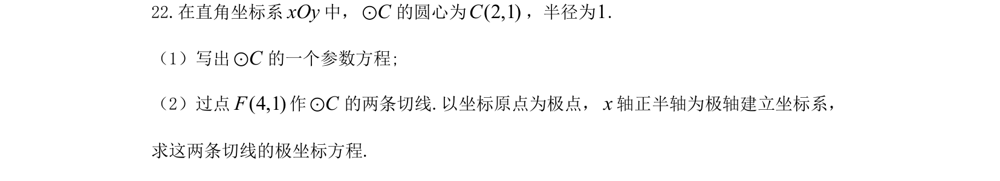
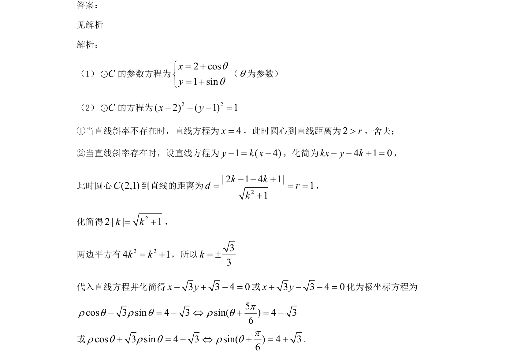

考点：圆参数方程 切线方程 点到直线距离公式 极坐标方程

本题考查圆的参数方程、过圆外一点的切线方程及直角坐标方程与极坐标方程的转化。

📄 原 PDF 第 14 页：
素材/真题/吉林/2008-2024·（吉林）数学高考真题/2021年高考数学试卷（文）（全国乙卷）（新课标Ⅰ）（解析卷）.pdf
22.在直角坐标系xOy中，Cε的圆心为)(2,1C，半径为1. （1）写出Cε的一个参数方程; （2）过点)(4,1F作Cε的两条切线.以坐标原点为极点，x轴正半轴为极轴建立坐标系， 求这两条切线的极坐标方程. 答案： 见解析 解析： （1）Cε的参数方程为 2 cos1 sinxyqq= += + （q为参数） （2）Cε的方程为 2 2( 2) ( 1) 1x y- + - = ①当直线斜率不存在时，直线方程为4x=，此时圆心到直线距离为2r>，舍去； ②当直线斜率存在时，设直线方程为1 ( 4)y k x- = -，化简为4 1 0kx y k- - + =， 此时圆心(2,1)C到直线的距离为 2| 2 1 4 1|11k kd rk- - += = =+ ， 化简得 22 | | 1k k= +， 两边平方有2 24 1k k= +，所以33k= ± 代入直线方程并化简得3 3 4 0x y- + - =或3 3 4 0x y+ - - =化为极坐标方程为 5cos 3 sin 4 3 sin( ) 4 36pr q r q r q- = - Û + = - 或cos 3 sin 4 3 sin( ) 4 36pr q r q r q+ = + Û + = +.